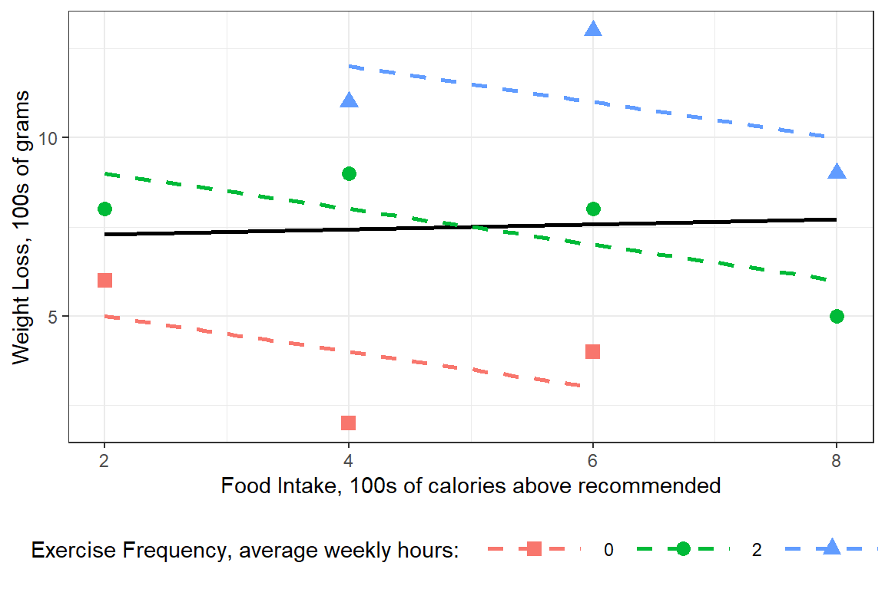
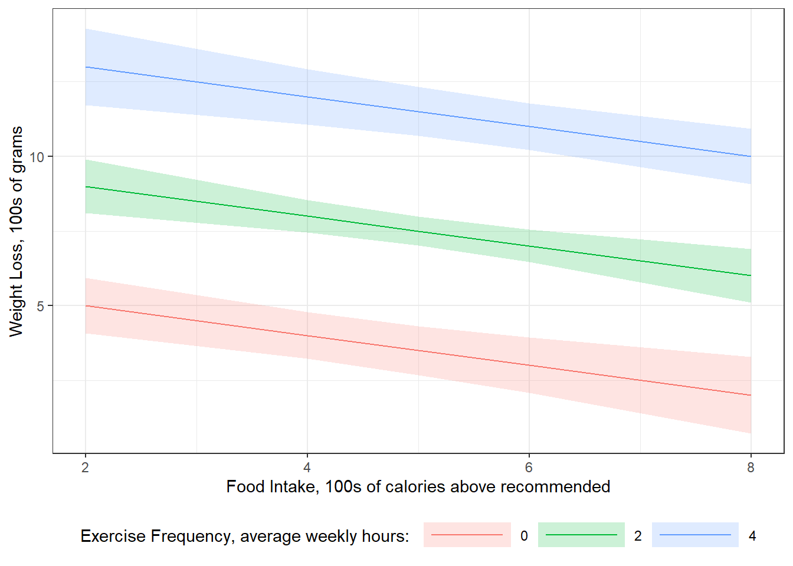

7 Interactions Example
library(tidyverse)
library(emmeans)
library(furniture)
library(stargazer)
library(psych)
library(texreg)
library(interactions)
library(rgl)Regression Analysis and Linear Models: concepts, applicaitons, and implementation - By Richard B. Darlington & Andrew F. Hayes
Chapter 3: Partial Relationships and the Multiple Linear Regressio Model
7.1 The Data
Data from Table 3.1
df <- data.frame(id = 1:10,
exercise = c( 0, 0, 0, 2, 2, 2, 2, 4, 4, 4),
food = c( 2, 4, 6, 2, 4, 6, 8, 4, 6, 8),
metabo = c(15, 14, 19, 15, 21, 23, 21, 22, 24, 26),
loss = c( 6, 2, 4, 8, 9, 8, 5, 11, 13, 9))
df# A tibble: 10 x 5
id exercise food metabo loss
<int> <dbl> <dbl> <dbl> <dbl>
1 1 0 2 15 6
2 2 0 4 14 2
3 3 0 6 19 4
4 4 2 2 15 8
5 5 2 4 21 9
6 6 2 6 23 8
7 7 2 8 21 5
8 8 4 4 22 11
9 9 4 6 24 13
10 10 4 8 26 97.2 Visualize
Figure 3.1
An example with a positive simple association and negative partial association.
df %>%
dplyr::mutate(exercise = factor(exercise)) %>%
ggplot(aes(x = food,
y = loss,
color = exercise,
shape = exercise)) +
geom_point(size = 3) +
theme_bw() +
labs(x = "Food Intake, 100s of calories above recommended",
y = "Weight Loss, 100s of grams",
color = "Exercise Frequency, average weekly hours: ",
shape = "Exercise Frequency, average weekly hours: ") +
theme(legend.position = "bottom",
legend.key.width = unit(2, "cm")) +
scale_shape_manual(values = c(15, 19, 17)) +
geom_smooth(aes(group = 1),
method = "lm",
se = FALSE,
color = "black") +
geom_smooth(aes(group = exercise),
method = "lm",
se = FALSE,
linetype = "dashed")
7.3 Regression
GEneric Form
\[ Y_i = b_0 + b_1X_{1i} + b_2X_{2i}+ e_i \]
\[ \hat{Y} = b_0 + b_1X_1 + b_2X_2 \]
fit_lm <- lm(loss ~ exercise + food,
data = df)
summary(fit_lm)
Call:
lm(formula = loss ~ exercise + food, data = df)
Residuals:
Min 1Q Median 3Q Max
-2 -1 0 1 2
Coefficients:
Estimate Std. Error t value Pr(>|t|)
(Intercept) 6.0000 1.2749 4.706 0.002193 **
exercise 2.0000 0.3333 6.000 0.000542 ***
food -0.5000 0.2520 -1.984 0.087623 .
---
Signif. codes: 0 '***' 0.001 '**' 0.01 '*' 0.05 '.' 0.1 ' ' 1
Residual standard error: 1.512 on 7 degrees of freedom
Multiple R-squared: 0.8376, Adjusted R-squared: 0.7912
F-statistic: 18.05 on 2 and 7 DF, p-value: 0.001727\[ \hat{Y} = 6 + 2X_{exercise} -0.5X_{food} \]
Figure 3.5, page 54
effects::Effect(focal.predictors = c("exercise", "food"),
mod = fit_lm,
xlevels = list(exercise = c(0, 2, 4))) %>%
data.frame %>%
dplyr::mutate(exercise = factor(exercise)) %>%
ggplot(aes(x = food,
y = fit,
fill = exercise)) +
geom_ribbon(aes(ymin = fit - se,
ymax = fit + se),
alpha = .2) +
geom_line(aes(color = exercise)) +
theme_bw() +
labs(x = "Food Intake, 100s of calories above recommended",
y = "Weight Loss, 100s of grams",
fill = "Exercise Frequency, average weekly hours: ",
color = "Exercise Frequency, average weekly hours: ") +
theme(legend.position = "bottom",
legend.key.width = unit(2, "cm")) 
Figrue 3.6, page 54
effects::Effect(focal.predictors = c("exercise", "food"),
mod = fit_lm,
xlevels = list(food = c(0, 4, 8))) %>%
data.frame %>%
dplyr::mutate(food = factor(food)) %>%
ggplot(aes(x = exercise,
y = fit,
fill = food)) +
geom_ribbon(aes(ymin = fit - se,
ymax = fit + se),
alpha = .2) +
geom_line(aes(color = food)) +
theme_bw() +
labs(x = "Food Intake, 100s of calories above recommended",
y = "Exercise Frequency, average weekly hours",
fill = "Weight Loss, 100s of grams: ",
color = "Weight Loss, 100s of grams: ") +
theme(legend.position = "bottom",
legend.key.width = unit(2, "cm")) 
anova(fit_lm)# A tibble: 3 x 5
Df `Sum Sq` `Mean Sq` `F value` `Pr(>F)`
<int> <dbl> <dbl> <dbl> <dbl>
1 1 73.5 73.5 32.2 0.000758
2 1 9 9 3.94 0.0876
3 7 16 2.29 NA NA jtools::summ(fit_lm,
conf = TRUE,
part.corr = TRUE)| Observations | 10 |
| Dependent variable | loss |
| Type | OLS linear regression |
| F(2,7) | 18.05 |
| R² | 0.84 |
| Adj. R² | 0.79 |
| Est. | 2.5% | 97.5% | t val. | p | partial.r | part.r | |
|---|---|---|---|---|---|---|---|
| (Intercept) | 6.00 | 2.99 | 9.01 | 4.71 | 0.00 | NA | NA |
| exercise | 2.00 | 1.21 | 2.79 | 6.00 | 0.00 | 0.91 | 0.91 |
| food | -0.50 | -1.10 | 0.10 | -1.98 | 0.09 | -0.60 | -0.30 |
| Standard errors: OLS |
fit_lm_Z <- lm(scale(loss) ~ scale(exercise) + scale(food),
data = df)summary(fit_lm_Z)
Call:
lm(formula = scale(loss) ~ scale(exercise) + scale(food), data = df)
Residuals:
Min 1Q Median 3Q Max
-0.6046 -0.3023 0.0000 0.3023 0.6046
Coefficients:
Estimate Std. Error t value Pr(>|t|)
(Intercept) 8.240e-17 1.445e-01 0.000 1.000000
scale(exercise) 9.872e-01 1.645e-01 6.000 0.000542 ***
scale(food) -3.265e-01 1.645e-01 -1.984 0.087623 .
---
Signif. codes: 0 '***' 0.001 '**' 0.01 '*' 0.05 '.' 0.1 ' ' 1
Residual standard error: 0.457 on 7 degrees of freedom
Multiple R-squared: 0.8376, Adjusted R-squared: 0.7912
F-statistic: 18.05 on 2 and 7 DF, p-value: 0.001727texreg::knitreg(list(fit_lm, fit_lm_Z),
single.row = TRUE)| Model 1 | Model 2 | |
|---|---|---|
| (Intercept) | 6.00 (1.27)** | 0.00 (0.14) |
| exercise | 2.00 (0.33)*** | |
| food | -0.50 (0.25) | |
| scale(exercise) | 0.99 (0.16)*** | |
| scale(food) | -0.33 (0.16) | |
| R2 | 0.84 | 0.84 |
| Adj. R2 | 0.79 | 0.79 |
| Num. obs. | 10 | 10 |
| p < 0.001; p < 0.01; p < 0.05 | ||